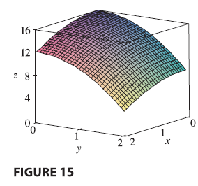

EXAMPLE 7 Find the volume of the solid \(S\) that is bounded by the elliptic paraboloid \(x^2 + 2y^2 + z = 16\), the planes \(x = 2\) and \(y = 2\), and the three coordinate planes.

SOLUTION We first observe that \(S\) is the solid that lies under the surface \(z = 16 - x^2 - 2y^2\) and above the square \(R = [0, 2] \times [0, 2]\). This solid was considered in Example 1, but we are now in a position to evaluate the double integral using Fubini’s Theorem. Therefore \[ V = \iint_R (16 - x^2 - 2y^2) dA = \int_0^2 \int_0^2 (16 - x^2 - 2y^2) dy dx \] \[ = \int_0^2 \left[ 16y - x^2y - \frac{2}{3}y^3 \right]_{y=0}^{y=2} dx = \int_0^2 \left( 32 - 2x^2 - \frac{16}{3} \right) dx \] \[ = \int_0^2 \left( \frac{80}{3} - 2x^2 \right) dx = \left[ \frac{80}{3}x - \frac{2}{3}x^3 \right]_0^2 = \frac{160}{3} - \frac{16}{3} = \frac{144}{3} = 48 \]
In the special case where \(f(x, y)\) can be factored as the product of a function of \(x\) only and a function of \(y\) only, the double integral of \(f\) can be written in a particularly simple form. To be specific, suppose that \(f(x, y) = g(x)h(y)\) and \(R = [a, b] \times [c, d]\). Then Fubini’s Theorem gives \[ \iint_R f(x, y) dA = \int_c^d \int_a^b g(x)h(y) dx dy = \int_c^d \left[ \int_a^b g(x)h(y) dx \right] dy \] In the inner integral, \(y\) is a constant, so \(h(y)\) is a constant and we can write \[ \int_a^b g(x)h(y) dx = h(y) \int_a^b g(x) dx \] since \(\int_a^b g(x) dx\) is a constant. Therefore, in this case the double integral of \(f\) can be written as the product of two single integrals: \[ \tag{eq:11} \iint_R g(x)h(y) dA = \left( \int_a^b g(x) dx \right) \left( \int_c^d h(y) dy \right) \quad \text{where } R = [a, b] \times [c, d] \]